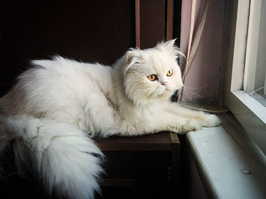
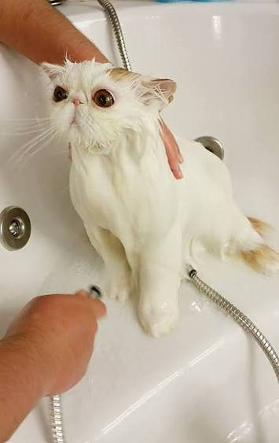
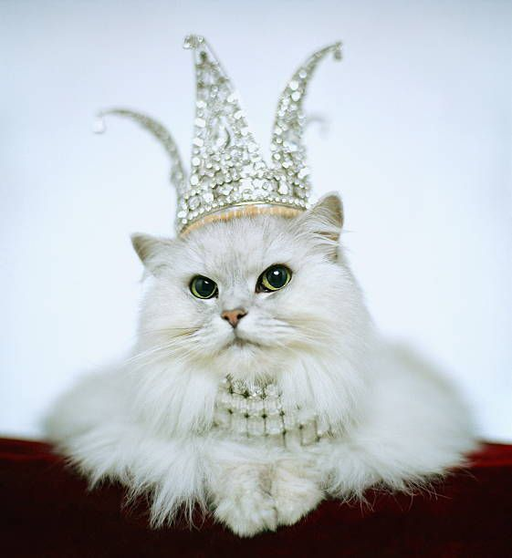

Hi there! I'm Xai Bao, a passionate coder who finds endless inspiration in the antics of Jelly the Cat.
Her playful nature and boundless energy keep me on my toes. I love her so much.
Posts
Jelly the Cat's First Day Home

Jelly the Cat in our home
The day Jelly arrived was an absolute whirlwind of curiosity and tiny paws. She spent her first two hours carefully exploring every single corner behind the living room sofa before finally gathering the courage to step out onto the rug.
By evening, she had completely claimed her favorite spot on top of the cat tree, curled up into a soft little ball, and fell fast asleep after a big bowl of dinner.
Jelly the Cat's First Bath

Jelly the Cat taking her first bath
Bath time was an adventure, to say the least! Although Jelly was not particularly thrilled when she first saw the warm soapy water, she stayed surprisingly calm with a few gentle encouraging words and plenty of treats nearby.
Once wrapped in a warm, fluffy towel afterwards, she purred loudly and spent the next hour meticulously grooming her fur until it was completely soft and squeaky clean.
Jelly the Cat's First Birthday Party

Jelly the Cat dressed up for her birthday party
We celebrated Jelly's first birthday with a handmade salmon cat cake and a brand-new feather wand toy. She was thoroughly fascinated by the colorful party hat we temporarily placed on her head!
Friends came over to drop off new toys, and Jelly spent the rest of the evening chasing ribbons across the floor until she collapsed into a well-deserved catnap.